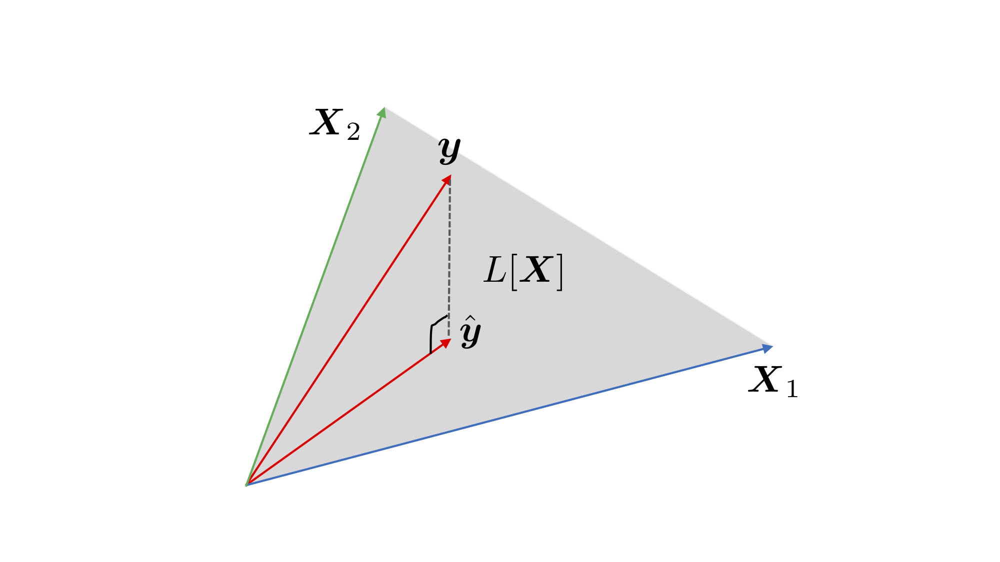

モデルの推定
(Press ? for help, n and p for next and previous slide)
村田 昇
2020.10.09
観測データ: n個の \((y,x_1,\dotsc,x_p)\) の組
\(y\) を \(x_1,\dotsc,x_p\) で説明するための関係式を構成:
一般には p変数関数 \(f\) を使う
\(f\) として1次関数を考える
ある定数 \(\beta_0,\beta_1,\dots,\beta_p\) を用いた以下の式:
線形回帰式:
確率モデル: データのばらつきを表す項 \(\epsilon_i\) を追加
回帰係数 \(\boldsymbol{\beta}=(\beta_0,\beta_1,\dotsc,\beta_p)^\top\) を持つ回帰式の残差:
残差平方和 (residual sum of squares):
最小二乗推定量 (least squares estimator): 残差平方和 \(S(\boldsymbol{\beta})\) を最小にする \(\boldsymbol{\beta}\)
デザイン行列 (design matrix):
目的変数，誤差，回帰係数のベクトル
確率モデル:
残差平方和:
解 \(\boldsymbol{\beta}\) では残差平方和の勾配は零ベクトル
成分 (\(j=0,1,\dotsc,p\)) ごとの条件式
但し \(x_{i0}=1\; (i=1,\dotsc,n)\)
条件を整理 (\(x_{ij}\) は行列 \(\boldsymbol{X}\) の \((i,j)\) 成分)
正規方程式 (normal equation):
正規方程式の解
lm() の使い方y: 目的変数 \(y\)x1,...,xp: 説明変数 \(x_1,\dotsc,x_p\)mydata: 目的変数，説明変数を含むデータ## ベクトルを渡す場合
lm(y ~ x1 + ... + xp)
## データフレームを渡す場合
lm(yの変数名 ~ x1の変数名 + ... + xpの変数名, data = mydata)
あてはめ値 (fitted values) / 予測値 (predicted values)
残差 (residuals) \(\boldsymbol{\hat{\epsilon}}:=\boldsymbol{y}-\boldsymbol{\hat{y}}\) はあてはめ値 \(\boldsymbol{\hat{y}}\) に直交

Figure 1: \(n=3\) , \(p+1=2\) の場合の最小二乗法による推定
説明変数および目的変数の標本平均:
\(\boldsymbol{\hat{\beta}}\) が最小二乗推定量のとき以下が成立:
以下の関係から簡単に示すことができる:
lm() の出力には様々な情報が含まれる## lmの出力を引数とする関数の例
coef(lmの出力) # 推定された回帰係数
fitted(lmの出力) # あてはめ値
resid(lmの出力) # 残差
model.frame(lmの出力) # modelに必要な変数の抽出
model.matrix(lmの出力) # デザイン行列
観測値と推定値 \(\boldsymbol{\hat{\beta}}\) による予測値の差:
残差ベクトル
3つのばらつきの関係
証明には以下の関係を使う
ばらつきの分解:
回帰式で説明できるばらつきの比率
決定係数 (R-squared):
自由度調整済み決定係数 (adjusted R-squared):
不偏分散で補正している